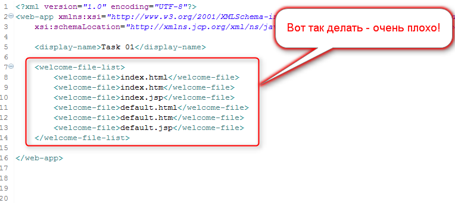

В файле web.xml, в секции <welcome-file-list>,
вы определяете где будет располагаться индексная страница вашего приложения и как она будет называться.
При этом вы помните, что индексная страница для Web-приложения — это все равно, что парадный вход для дома:
В приложении она может быть только одна
Однако в вашей секции <welcome-file-list>, по какой-то секретной причине,
таких страниц объявлено аж целых шесть!
Но вы все еще помните, что реально работать будет только одно объявление. Все остальное — не нужный балласт.
Конечно, это не грубая ошибка. Более того, эту секцию для вас автоматически сформировал Eclipse, вы тут, вроде как, — вообще не при чем.
Но я все равно заставляю вас чистить web.xml от лишних элементов.
Ведь, что ни говори, но вы должны контролировать свой проект, и лишние,
неиспользуемые элементы в нем недопустимы — их и так в Java-проекте будет слишком много
В результате, от неправильной конфигурации индексных страниц, которая у вас сейчас выглядит примерно вот так:
Вы должны перейти к правильной, которая будет выглядеть примерно вот так:
После чего эта ошибка... Да что там ошибка!.. Это досадное недоразумение будет исправлено, и можно будет, наконец заняться действительно серьезными архитектурными JavaEE-штуками.
Однако, как вы еще не раз заметите, ирония серьезных архитектурных JavaEE-штук заключается в том,
что они все — вот такие же мелкие и незначительные, просто их — мильен-мильярдов